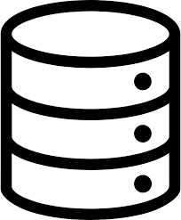

Sobre mi
Actualmente estoy explorando diferentes conceptos de back-end en diferentes areas, con mis planes a poder integrar estos conceptos con el front-end así pudiendo proporcionar soluciones comerciales a empresas y negocios. Yo visiono la tecnologia como un medio para poder mejorar la calidad de vida de las personas, siempre teniendo en cuenta el factor humano durante la elaboración y desarrollo de proyectos.
Experiencia académica
En relación a las materias más significativas que cursado durante mi carrera
- Programación orientada a objetos
- Implementación de internet de las cosas (IoT)
- Programación de algoritmos fundamentales y estructuras de datos
Lenguajes de Programación
- Python
- SQL
- R



Habilidades
En relación a diferentes habilidades propias que contribuyen a mis proyectos
- Desarrollo de proyectos de transformación digital
- Ciencia de datos
- Administración de proyectos IoT